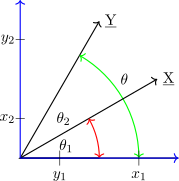
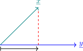

1.8 Vectors and Matrices
1.8.1 Inner Product
Suppose that \(\underline {X} = \begin {pmatrix} X_1 & , & X_2 & , & \cdots \cdots , & X_n\\ \end {pmatrix}'\) and \(\underline {Y} = \begin {pmatrix} Y_1 & , & Y_2 & , & \cdots \cdots , & Y_n\\ \end {pmatrix}'\) are two vectors, one useful product of \(\underline {X}\) and \(\underline {Y}\) is called the INNER PRODUCT. It is defined by \begin {align*} \underline {X}'\underline {Y} & = \begin {pmatrix} X_1 & , & , \cdots \cdots \cdots , & X_n\\ \end {pmatrix} \begin {pmatrix} Y_1\\ \vdots \\ \vdots \\ Y_n\\ \end {pmatrix}\\\\ & = X_1Y_1 + X_2Y_2 + \cdots \cdots \cdots \cdots + X_nY_n\\ & = \sum ^n_{i=1}X_iY_i\hspace {0.5cm}\cdots \cdots \cdots \cdot \hspace {0.5cm} (1)\\ \end {align*}
If \(\underline {Y}\) is replaced by \(\underline {X}\) we obtain the square of \((\underline {X}^2)\) of the length of \(\underline {X}\) from the origin
\[L^2_x = \underline {X}'\underline {X}= \sum ^n_{i=1}X^2_i\]
\[L_x = \sqrt {\sum X_i^2}\hspace {0.4cm}\cdots \cdots \cdots \cdots \hspace {0.4cm} (2)\]
Similarly for \(\underline {Y}\)
\[L_y = \sqrt {\sum Y_i^2}\hspace {0.4cm} \cdots \cdots \cdots \cdots \cdots \hspace {0.4cm} (3)\]
In \(\mathbb {R}^2\) we have a geometrical concept to the relation (1)

In the figure:
- 1.
- \(\theta = \theta _2 - \theta _1\)
- 2.
- \(\theta _2\) is associated with \(\underline {Y}\)
- 3.
- \(\theta _1\) is associated with \(\underline {X}\)
- 4.
- \(\dfrac {X_1}{L_x}= \cos \theta _1,\hspace {0.5cm} \dfrac {X_2}{L_x}= \sin \theta _1\)
- 5.
- \(\dfrac {Y_1}{L_y}= \cos \theta _2,\hspace {0.8cm} \dfrac {Y_2}{L_y}=\sin \theta _2\)
- 6.
- Now \begin {align*} \cos 3\theta & = \cos ( \theta _2 - \theta _1)\\ & = \cos \theta _2\cos \theta _1 + \sin \theta _2\sin \theta _1\\\\ & = \dfrac {Y_1}{L_y}\cdot \frac {X_1}{L_x} + \frac {Y_2}{L_y}\cdot \frac {X_2}{L_x}\\ \end {align*}
\begin {align*} \cos 3\theta & = \frac {X_1Y_1 + X_2Y_2}{L_XL_Y}=\frac {\underline {X}'\underline {Y}}{L_xL_y}\\\\ & = \frac {\underline {X}'\underline {Y}}{\sqrt {\underline {X}'\underline {X}}\sqrt {\underline {Y}'\underline {Y}}}\hspace {0.5cm} \cdots \cdots \cdots \cdots \cdots \hspace {0.5cm} (4)\\ \end {align*}
From relationship (4) we have the \(\displaystyle {4.1\hspace {1cm} \theta = 0 \implies 1 = \dfrac {\underline {X}'\underline {Y}}{L_xL_y}\hspace {0.5cm}\text {or}\hspace {0.5cm} L_xL_y = \underline {X}'\underline {Y}}\)
suggesting \(\underline {Y} = t\underline {X}\) for some \(t\) \(\displaystyle {4.2\hspace {1cm} \theta = \dfrac {\pi }{2}\implies 0 = \frac {\underline {X}'\underline {Y}}{L_xL_y}\implies \underline {X}'\underline {Y} = 0}\)
suggesting \(\underline {X}\) and \(\underline {Y}\) are perpendicular.
1.8.2 Projection
If \(\underline {X}\) and \(\underline {Y}\) are two vectors the projection of \(\underline {X}\) on \(\underline {Y}\) is \(\displaystyle {= \frac {\underline {X}'\underline {Y}}{\underline {Y}'\underline {Y}}\hspace {0.1cm}\underline {Y}}\)
( a vector on \(\underline {Y}\)) \(\hspace {0.3cm}\cdots \cdots \cdots \hspace {0.4cm} (5)\)

\[\dfrac {\underline {x}'\underline {y}}{L^2_Y}\hspace {0.1cm}\underline {y}\]
Note that \(\displaystyle {\frac {\underline {X}'\underline {Y}}{L_yL_y}\hspace {0.1cm} \underline {Y}= \frac {\underline {X}'\underline {Y}}{L_y}\cdot \frac {\underline {Y}}{L_y}=\frac {\underline {X}'\underline {Y}}{L_y}\cdot \mu _y}\)
\(\mu _y = \dfrac {\underline {Y}}{L_y}\) ( a unit vector in the direction of \(\underline {Y}\)). So \(\dfrac {\underline {X}'\underline {Y}}{L_yL_y}\hspace {0.1cm} \underline {Y} = L_x\cos \theta \dfrac {\underline {Y}}{L_y}\).
The length of the projection is
\begin {align*} \Bigg [\Bigg (\dfrac {\underline {X}'\underline {Y}}{L_y^2}\hspace {0.1cm}\underline {Y}\Bigg )'\Bigg (\dfrac {\underline {X}'\underline {Y}}{L_y^2}\hspace {0.1cm}\underline {Y}\Bigg )\Bigg ]^{\dfrac {1}{2}} & = \frac {L_x L_y \begin {vmatrix} \cos \theta \\ \end {vmatrix} }{L_y} = L_x \begin {vmatrix} \cos \theta \\ \end {vmatrix}\hspace {0.5cm}\cdots \cdots \cdots \cdots \hspace {0.5cm} (6)\\ \end {align*}
| Province | \(1991_X\) | \(1993_Y\) | \(X\cdot Y\) | Pro \(X\) on \(Y\) |
| Central | 55.7 | 70.7 | 3938.0 | \(+65.3\) |
| Copperbelt | 43.8 | 28.1 | 1230.8 | \(-26.0\) |
| Eastern | 76.1 | 81.2 | 6179.3 | \(-75.0\) |
| Luapula | 72.5 | 77.8 | 5640.5 | \(-71.9\) |
| Lusaka | 18.7 | 24.3 | 454.4 | \(+22.4\) |
| Northern | 75.9 | 71.5 | 5426.9 | \(-66.0\) |
| N.Western | 64.5 | 75.5 | 4869.8 | \(+69.7\) |
| Southern | 69.4 | 76.1 | 5281.3 | \(+70.3\) |
| Western | 75.8 | 83.5 | 6329.3 | \(+77.1\) |
\[\underline {X}'\underline {Y} = 39350.24\]
\[L^2_y = 42600.83\]
\[\frac {\underline {X}'\underline {Y}}{L^2_y}\hspace {0.1cm}\underline {Y}\]
1.8.3 Eigen Values and Eigen Vectors
- 1.
- General result
If \(A_{p\times p}\) is any square matrix then \[q(\lambda ) = \begin {vmatrix} A - \lambda I\\ \end {vmatrix}\] is the \(p^{\text {th}}\) order polynomial in \(\lambda \). The \(P\) roots of \(q(\lambda )\), \(\hspace {0.3cm} \lambda _1,\cdots \cdots \cdots , \lambda _p\) possibly complex numbers, are called eigen values of matrix \(A\).
Some of the \(\lambda _i\) will be equal if \(q(\lambda )\) has multiple roots. For each \(i=1,2,\cdots \cdots , p\),
\(\begin {vmatrix} A - \lambda I\\ \end {vmatrix} = 0\), so \(A - \lambda _i I\) is singular. Hence there exists a non-zero vector \(\underline {e}\) satisfying \[A\underline {e} = \lambda \underline {e}\hspace {0.5cm} \cdots \cdots \cdots \cdots \cdots \hspace {0.5cm} (2)\] Any vector satisfying (2) is called an eigen vector of \(A\) and \(\begin {vmatrix} A - \lambda I\\ \end {vmatrix} = 0\) is called the characteristic equation. - 2.
- An eigen vector \(\underline {e}\) with real entries is called standardized if \(\underline {e}'\underline {e} = 1\hspace {0.3cm} \cdots \cdots \cdots \hspace {0.5cm} (3)\)
- 3.
- Since the coefficients of \(\lambda ^p\) in \(q(\lambda )\) is \((-1)^p\) we can write \(q(\lambda )\) in terms of its roots as follows \[q(\lambda ) = \prod ^p_{i=1} (\lambda _i - \lambda )\hspace {0.5cm} \cdots \cdots \cdots \cdots \cdots \hspace {0.5cm} (4)\] and setting \(\lambda = 0\) in (1) and (4) gives \[\begin {vmatrix} A\\ \end {vmatrix}= \prod ^p_{i=1} \lambda _i \hspace {0.4cm} \cdots \cdots \cdots \cdots \hspace {0.4cm} (5)\] i.e \(\begin {vmatrix} A\\ \end {vmatrix}\) is the product of the eigen values of A.
- 4.
- Matching the coefficients of \(\lambda ^{p-1}\) in equation (1) and (4) gives
\[\sum ^p_{i=1} a_{ij} = \sum ^p_{i=1} \lambda _i = Tr(A) \hspace {0.5cm} \cdots \cdots \cdots \cdots \hspace {0.5cm} (6)\]
\(Tr(A)\) is the sum of eigen values of \(A\).
Example 1.7. Consider the matrix \(A = \begin {pmatrix} 1 & 3 & 0 \\ 3 & 1 & 0\\ 0 & 0 & 2\\ \end {pmatrix}\)
- 1.
- Determine
- (a)
- eigen values \(\lambda _1, \lambda _2, \lambda _3\)
- (b)
- eigen vectors
- 2.
- Verify
- (a)
- \(\begin {vmatrix} A\\ \end {vmatrix} = \prod \lambda _i\)
- (b)
- \(Tr(A) = \sum \lambda _i\)
Solution. Characteristic equation \(\begin {vmatrix} 1-\lambda & 3 & 0 \\ 3 & 1 -\lambda & 0\\ 0 & 0 & 2-\lambda \\ \end {vmatrix}=0\)
\begin {align*} (1-\lambda )(1-\lambda )(2-\lambda )-9(2-\lambda ) & = 0\\ (2-\lambda )\big [(1-\lambda )^2-9\big ] & = 0\\ (2-\lambda )(1-\lambda - 3) (1-\lambda + 3) & = 0\\ (2-\lambda )(-2-\lambda )(4-\lambda ) & = 0\\ \end {align*}
\[\lambda = 2\hspace {0.3cm}, \hspace {0.5cm} \lambda = 4\hspace {0.3cm} , \hspace {0.5cm} \lambda = -2\]
- 1.
-
- (a)
- \(\lambda _1 = 2\hspace {0.2cm} , \hspace {0.5cm} \lambda _2 = 4\hspace {0.2cm} , \hspace {0.5cm} \lambda _3 = -2\)
- (b)
- \(\lambda _1 = 2\) \begin {align*} A\underline {e} & = 2 \underline {e}\hspace {1cm} (A\underline {e} = \lambda \underline {e})\\\\ \begin {pmatrix} 1 & 3 & 0\\ 3 & 1 & 0\\ 0 & 0 & 2\\ \end {pmatrix}\begin {pmatrix} e_1\\ e_2\\ e_3\\ \end {pmatrix} & = 2\begin {pmatrix} e_1\\ e_2\\ e_3\\ \end {pmatrix}\\ \end {align*}
\begin {align*} e_1 + 3e_2 & = 3e_1 \hspace {0.4cm}\cdots \cdots \cdots \cdots \hspace {0.5cm} (i)\\ 3e_1 + e_2 & = 2e_2\hspace {0.4cm}\cdots \cdots \cdots \cdots \hspace {0.5cm} (ii)\\ 2e_3 & = 2e_3\hspace {0.4cm} \cdots \cdots \cdots \cdots \hspace {0.5cm} (iii)\\ \end {align*}
From \((ii)\) , \(e_2=3e_1\) and using \((i)\) we obtain \[e_1 =0 \implies e_2 = 0\] Choose \(e_3 = 1\) so \(\underline {e}_1 = \begin {pmatrix} 0 & , & 0 & , & 1\\ \end {pmatrix}'\)
Alternatively: \(\begin {pmatrix} 1 & 3 & 0\\ 3 & 1 & 0\\ 0 & 0 & 2\\ \end {pmatrix}\underline {e} = 2\underline {e}\)
\begin {align*} \implies \hspace {1cm} \Bigg [\begin {pmatrix} 1 & 3 & 0\\ 3 & 1 & 0\\ 0 & 0 & 2\\ \end {pmatrix} -2 I_3\Bigg ] \underline {e} & = 0\\\\ \begin {pmatrix} -1 & 3 & 0\\ 3 & -1 & 0\\ 0 & 0 & 0\\ \end {pmatrix}\underline {e} & = 0\\\\ \begin {pmatrix} A^* & \underline {0}\\ \underline {0} & 0\\ \end {pmatrix}\begin {pmatrix} \underline {e}_1\\ \underline {e}_2\\ \end {pmatrix} & = \begin {pmatrix} \underline {0}\\ \underline {0}\\ \end {pmatrix}\hspace {0.5cm} \cdots \cdots \cdots \cdots \hspace {0.5cm} *\\ \end {align*}
From \(*\) we obtain \(e_1 = e_2 =0\) since a \( \begin {vmatrix} A^*\\ \end {vmatrix}= \begin {vmatrix} -1 & 3\\ -3 & -1\\ \end {vmatrix}\neq 0\) and \(e_3\) can be chosen to be any value.
For \(\lambda = 4\) \(\hspace {1cm} \begin {pmatrix} 1 & 3 & 0\\ 3 & 1 & 0\\ 0 & 0 & 2\\ \end {pmatrix}\underline {e} =4\underline {e}\)
\begin {align*} e_1 + 3e_2 & = 4e_1 \hspace {0.5cm}\cdots \cdots \cdots \cdots \hspace {0.5cm} (i)\\ 3e_1 + e_2 & = 4e_2 \hspace {0.5cm}\cdots \cdots \cdots \cdots \hspace {0.5cm} (ii)\\ 2e_3 & = 4e_3 \hspace {0.5cm} \cdots \cdots \cdots \cdots \hspace {0.5cm} (iii)\\ \end {align*}
From \((iii)\), \(2e_3 = 0 \implies e_3 = 0\) in \((i)\) \[3e_2 = 3e_1 \implies e_2 = e_1\] the same as in \((ii)\). Choose \(e_1 = e_2 = 1\) \[\underline {e}^*_2 = \begin {pmatrix} 1 & , & 1 & , & 0\\ \end {pmatrix}'\]
Note 1.8. \(\begin {vmatrix} \begin {vmatrix} \underline {e}_2^*\\ \end {vmatrix} \end {vmatrix} = \sqrt {2}\), but we require \(e^*_2\) to be a unit vector, hence we normalize \(\underline {e}^*_2\) to obtain
\begin {align*} \underline {e}_2 & = \begin {pmatrix} \dfrac {1}{\sqrt {2}} & , & \dfrac {1}{\sqrt {2}} & , & 0\\ \end {pmatrix}'\\\\ & = \begin {pmatrix} \dfrac {\sqrt {2}}{2} & , & \dfrac {\sqrt {2}}{2} & , & 0 \\ \end {pmatrix}'\\ \end {align*}
For \(\lambda = -2\hspace {1cm}\) \(\begin {pmatrix} 1 & 3 & 0\\ 3 & 1 & 0\\ 0 & 0 & 2\\ \end {pmatrix}\underline {e} = -2\underline {e}\)
\begin {align*} e_1 + 3e_2 & = -2e_1 \hspace {0.5cm} \cdots \cdots \cdots \cdots \hspace {0.5cm} (i)\\ 3e_1 + e_2 & = -2e_2 \hspace {0.5cm} \cdots \cdots \cdots \cdots \hspace {0.5cm} (ii)\\ 2e_3 & = -2e_e \hspace {0.5cm} \cdots \cdots \cdots \cdots \hspace {0.5cm} (iii)\\ \end {align*}
From \((iii)\) we get \(4e_3 = 0 \implies e_3 =0\)
\((i)\) and \((ii)\) \(\implies \hspace {0.5cm} \left .\begin {aligned} 3e_1 + 3e_2 & = 0\\ 3e_1 + 3e_2 & = 0\\ \end {aligned} \right \}\hspace {0.4cm} \cdots \cdots \cdots \cdots \hspace {0.5cm} * \)
from \(*\) we get \(e_1 = -e_2\). Choose \(e_1 = 1 \implies e_2 = -1\) . Hence \(\underline {e}^*_3 = \begin {pmatrix} 1 & , & -1 & , & 0\\ \end {pmatrix}'\)
\[\text {Thus}\hspace {1cm} \underline {e}_3 = \begin {pmatrix} \dfrac {1}{\sqrt {2}} & , & -\dfrac {1}{\sqrt {2}} & , & 0\\ \end {pmatrix}'\]
\(\lambda _1 = 2\) \(\lambda _2 = 4\) \(\lambda _3 = -2\) \(\displaystyle { \underline {e}_1 = \begin {pmatrix} 0\\ 0\\ 1\\ \end {pmatrix} }\) \(\displaystyle {\underline {e}_2 = \begin {pmatrix} 1/\sqrt {2}\\ 1/\sqrt {2}\\ 0\\ \end {pmatrix} }\) \(\displaystyle {\underline {e}_3= \begin {pmatrix} 1/\sqrt {2}\\ -1/\sqrt {2}\\ 0\\ \end {pmatrix} }\) Note 1.9. \begin {align*} \underline {e}_1 \cdot \underline {e}_2 & = 0 (1/\sqrt {2}) + 0(1/\sqrt {2}) + 1 (0) = 0\\ \underline {e}_1 \cdot \underline {e}_3 & = 0(1\sqrt {2}) + 0(-1/\sqrt {2}) + 1 (0) = 0\\ \underline {e}_2 \cdot \underline {e}_3 & = \frac {1}{\sqrt {2}}(1/\sqrt {2}) + \frac {1}{\sqrt {2}}(-1\sqrt {2}) + 0(0) = 0\\ \end {align*}
\[\implies \hspace {1cm} \underline {e}_1 \perp \underline {e}_2\hspace {0.3cm} , \hspace {0.5cm} \underline {e}_1 \perp \underline {e}_3\hspace {0.3cm} , \hspace {0.5cm} \underline {e}_2 \perp \underline {e}_3\]
- 2.
-
- (a)
- \begin {align*} \begin {vmatrix} A\\ \end {vmatrix} & = \begin {vmatrix} 1 & 3\\ 3 & 1\\ \end {vmatrix}(2) = (1-9)(2)\\\\ & = (-8)(2)\\\\ & = \prod ^3_{i=1}\lambda _i = \lambda _1 \cdot \lambda _2 \cdot \lambda _3\\ & = 2(4)(-2)\\ & = -16\\ \end {align*}
- (b)
- \begin {align*} Tr(A) & = Tr \begin {pmatrix} 1 & 3 & 0\\ 3 & 1 & 0\\ 0 & 0 & 2\\ \end {pmatrix}\\\\ & = 1 + 1 + 2 = \sum ^3_{i=1} \lambda _i = \\\\ & = 4 = 2 + 4 + (-2)\\ \implies \hspace {1cm} & 4 = 4\\\\ \end {align*}
Questions on this section
Stuck on something here? Ask below and it stays attached to this topic.